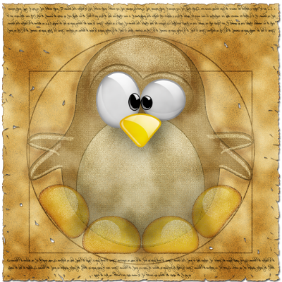

Humans behind the machines

Humanities
Humanities are academic disciplines that study human culture.
- Classics
- History
- Geography
- Languages
- Law and Politics
- Literature
- Performing arts
- Music
- Theatre
- Dance
- Philosophy
- Religion
- Visual arts
- Drawing
- Painting
- Film